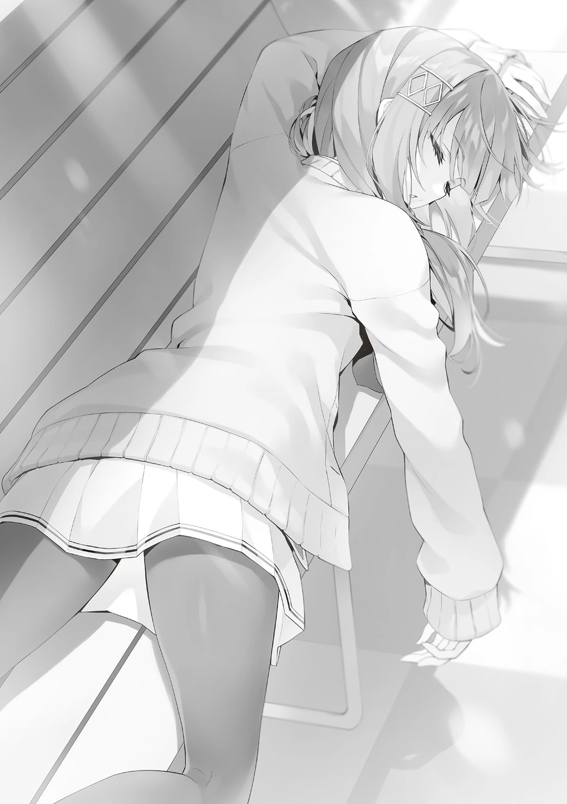

Keyaki Mall’dan dönerken Morishita’nın bir bankta uzandığını gördüm.
“Bu da ne böyle…”
Yanımda duran Kei, şaşkın ve biraz da geri adım atmış bir ifadeyle Morishita’ya baktı.
Gözlerini kapatmış, çok da güneşli olmayan bir havada bankta uzanmış olan Morishita’yı anlayamıyordu.
Kar erimişti, ama hâlâ ocak ayının ortasındaydık—kışın tam ortasıydı.
“Öldü mü acaba?”
Bir an düşündüm, acaba bu Morishita için bu son olabilir mi?
“Hayır, ölmedi.”
Yanımdaki Kei araya girip bunu yalanladı.
“Bu doğru, ölmedim.”

Morishita somurtkan bir ifadeyle doğrulup uykulu gözlerle bize baktı. Sanki birazdan uyuyacak gibiydi.
Bu dondurucu gökyüzü altında uykulu olabilmek etkileyiciydi.
“Böyle bir yerde ne yapıyorsun?”
“Merak mı ettin?”
“Merak etmedim desem yalan olur, ama―”
“O zaman açıklayayım. İster inan ister inanma, seni bekliyordum, Ayanokōji Kiyotaka.”
Kei sadece merakla daha fazla sorgulamaya çalışırken Morishita sözümü kesip durumu açıkladı.
Kibar bir şekilde konuşmasına rağmen bana saygı eki kullanmadan hitap etmesi biraz rahatsız etti.
“Eh, birbirinizi tanıyor musunuz?”
Tabii, Kei de şaşıracaktı.
“Tanıdık sayılmayız. Sadece bir kez konuştuk.”
“Hmm? Kiyotaka-kun, başka sınıflardan ne kadar çok kız tanıyorsun böyle?”
Kei, bir öğretmen gibi bana yukarıdan bakarak kollarını çaprazladı ve sorgulayıcı bir bakış attı.
“İlk ben konuşmadım.”
“Kimin ilk konuştuğu önemli değil. Konuşmanın gerçekleşmiş olması sorun.”
Oldukça mantıksız bir düşüncesi vardı. Tabii ki, bu cümleyi ciddiyetle söylerken bile aslında ciddi olmadığını biliyordum.
“Beni beklediğini söyledin, ama senle konuşmasaydım ne yapmayı planlıyordun?”
Morishita’nın burada varlığını görmezden gelmenin sorun olmayacağını düşünmüştüm ve sadece tesadüfen ona konuşmuştum.
“Merak etme. Gözlerimi biraz aralayarak bakıyordum, bu yüzden geçtiğini fark ederdim.”
Neden uyumadığı halde uzandığını anlayamıyordum. Morishita’nın davranışları üzerine fazla düşünürsem zamanımın boşa gideceğini hissedim.
“Neden beni bekliyordun?”
“Sence neden?”
Bana geri sormasını hiç beklememiştim.
“Kesinlikle tahmin edemem.”
“Şansım yaver gitti. Bu yanındaki kızla ilgili aslında, özellikle onunla.”
“Eh, ben mi?”
Kei şaşkınlıkla kendisini işaret etti, kendisinin olaya dahil olduğunu düşünmemişti.
“Evet. Senin nasıl biri olduğunu merak ediyordum.”
“Merak mı? Ne demek istiyorsun?”
“Araştırırken tuhaf bir şey fark ettim.”
Morishita yavaşça ayağa kalkarken uykulu gözlerini Kei’ye dikti ve yavaşça ona doğru ilerlemeye başladı.
“Ne? Bu da ne böyle?”
Morishita’nın Hiyori’den farklı, kendine özgü bir aurası vardı. Bu ne sükûnet ne de uyumdu; sadece garip bir durumdu. Kei de Morishita’nın tuhaflığını hızla fark etmişti ve biraz geri çekilmişti.
“Karuizawa Kei. İlk başta Hirata Yōsuke ile çıkıyordun, değil mi?”
Ah, gerçekten de hem Kei hem de Yōsuke birbirlerine isimleriyle hitap ediyordu.
“Ee, ne olmuş?”
“Hirata Yōsuke ile neden çıktın? Hayır, Hirata Yōsuke neden senin gibi bir kadınla çıkardı ki?”
Bir dedektif gibi suçluyu köşeye sıkıştıran Morishita, Kei’nin etrafında yürümeye başladı.
“Bir dakika, bir dakika, bu söylediğin biraz kaba değil mi?”
“Hirata Yōsuke’yi de kendi yöntemlerimle araştırdım. Okulun en popüler çocuğu olduğu söyleniyor. Futbol takımına ait olması popülaritesine katkıda bulunuyor, akademik performansı mükemmel, görünüş olarak şanslı, cinsiyet eşitliğine saygı duyuyor ve nazik, düşünceli, zeki biri.”
Söyleyiş biçiminde dikkatimi çeken birkaç şey vardı, ama Yōsuke hakkındaki değerlendirmesi geçerli ve doğruydu. Kısacası, yüzeyde, ona mükemmel bir öğrenci demek adildi.
Kolayca incinebilecek ve kendini köşeye sıkıştıracak bir eğilimi vardı, ama bu bahsetmeye değer bir şey değildi, bu yüzden atlandı.
“Böyle birinin senin gibi sıradan bir kadını seçeceğini mi düşünüyorsun?”
“…Sıradan derken neyi kastediyorsun?”
“…Sıradan derken neyi kastediyorsun?”
“Bilmiyorum. Bu terimi ilk kez duydum.”
Yalan söyledim.
‘Sıradan’ demek, sorumsuz ve kayıtsız anlamına gelir.
Belirsiz bir his taşır.
Eğer burada Kei’ye bunu söylersem, bir tartışmanın başlamasına neden olurdu.
Morishita, şaşırmış haldeki Kei’nin yanağını nazikçe işaret parmağıyla okşadı.
“İznim olmadan bana dokunma.”
“Şu an kendini tutuyorsun gibi görünüyor, ama başlarda, daha birinci sınıftayken, ağır makyaj yaptığın dedikodusu vardı.”
“Bu… Bu benim seçimimdi.”
“Sen sıradan bir kadınsın, özgün değilsin ve ağır makyaj yapıyorsun. Hirata Yōsuke neden seni seçti, anlamıyorum.”
“Şey, sanırım çünkü şirindim?”
Kei, zorbalığa uğradığı geçmişini saklamak için Yōsuke’den yardım istediğini söylemeden, işine gelen bir öz değerlendirme yaptı.
“Ağır makyajı bir maske olarak değiştirirsen, anlamak daha kolay olur; sen utangaç ve hassas bir ruhsun. Ama öyleyse, güçlü iradeli ve lider olan, kızlar arasında baskın bir figür olan kişiliğinle çelişkili görünüyor.”
Onun bir tuhaf olduğu kesindi. Ama Morishita, bilgi toplama ve şüpheleri fark etme konusunda yeterince zeki bir öğrenci gibi görünüyordu.
“Senin neyin var böyle…”
Böylesine açık bir mantık karşısında Kei rahatsız olmuştu.
Eğer konuşmaya devam edersek, muhtemelen iyi bir yöne gitmeyecekti.
“Aşkın mantıklı olduğunu düşünmüyorum. Kei ile duygularımız nedeniyle çıkmaya başladık. Bunun bir sorunu var mı?”
Kei’nin yanıma doğru yaklaştığı ve sözlerimden hoşnut kaldığı, gözlerini mutlulukla bakmasından belliydi.
“Anladım, bu doğru. Hiç aşık olmadığım için mantığın geçerli olmayacağını inkâr edemem.”
Eğer aşk hesaplanabilen bir şey olsaydı, bu kadar zaman harcamazdım.
“Az önceki kaba sözlerim için özür dilerim, Karuizawa Kei.”
Kei’nin tam önüne gelerek Morishita derin bir şekilde eğildi… fazlasıyla eğildi ve o şekilde kalmaya devam etti.
“Bu kadar çok özür dilemene gerek yok, anlıyorum.”
“Öyle mi? O halde, özür bittiğine göre sorun yok, değil mi?”
“Eh? Şey… tamam, ama pek hoşuma gitmedi.”
Bu duyguyu çok iyi anlayabiliyordum, ama yapılacak bir şey yoktu.
“Daha fazla rahatsızlık vermek istemiyorum, o yüzden gitsem iyi olur.”
“Nihayet anladın… Belki de sandığımdan daha iyi bir kızsın?”
Bu noktada, Morishita’yı salıvermek en güvenli hareket olurdu, ancak onunla temas kurma fırsatları çok sık değildi.
Beni rahatsız eden bir soruyu sormaya karar verdim.
“Sakayanagi’nin sınıfındaki bir öğrenci için oldukça farklısın, değil mi? Başkaları bunu sana söylemiyor mu?”
Yanımda duran Kei, sanki beni durduracakmış gibi bir ifadeyle bana baktı, ama cevap beklediğim için umursamadan devam ettim.
“Elbette, sık sık duyuyorum. ‘Çok farklısın’ diyorlar.”
Bu mantıklıydı. Kesinlikle farklı biri olduğu açıktı.
“Ama komik olan şu: Ben her zaman kendimin farklı olduğunun farkında oldum, hep kendimi özel biri olarak gördüm. Yine de sürekli olarak, ‘Çok farklısın’ denilmesinden pek hoşlanmıyorum.”
“Bu konuda özür dilerim. Ama açıkçası, senin gibi bir öğrencinin Sakayanagi’nin sınıfında olduğunu bu iki yıl boyunca fark etmemiştim.”
“Anlıyorum. Hiçbir belirgin kişiliği olmayan birinin aslında farklı biri çıkması seni şaşırttı.”
“Aynen öyle.”
“İlgimi çekmedikçe herhangi bir hamle yapmam. Sakayanagi Arisu ve Katsuragi Kōhei sınıfa liderlik edip tüm Sınıf A’yı korudukları sürece, benim bir şey yapmama gerek kalmadı. Kendimi göstermeye ihtiyaç duymadım. Sessizce yaşarsam, olduğu gibi mezun olabilirim. Eğer sakin bir hayat sürersem, insanların beni belirgin olmayan bir kişilik olarak görmesi doğal.”
Durumunu gizlemeyerek, neden böyle algılandığı konusunda açık bir şekilde konuşuyordu.
Morishita’nın açıklaması mantıklıydı. Şu an, Morishita gibi öğrencilerin beni izlemesine yetecek kadar dikkat çekiyordum.
Sıradan bir öğrenci olarak kimseye dikkat çekmeden varlık göstermem gerekiyorken, Horikita’dan bile daha fazla öne çıkmıştım.
Tabii ki bu, benim bilinçli olarak harekete geçmemden kaynaklanıyordu.
Eğer Morishita gibi A sınıfında olsaydım ve Sakayanagi ile tanışmamış olsaydım, durum tamamen farklı olurdu.
Hiçbir şey yapmadan sadece verilen talimatları takip etmek, A sınıfının pozisyonunu güvence altına almak için yeterli olurdu.
Bundan daha kolay ne olabilirdi ki?
Sessiz bir şekilde yaşayan, şüphe uyandırmayan ve dikkat çekmeyen bir öğrenci olarak günlerimi geçirirdim.
Hiç kimse tarafından kuşku duyulmayan bir mezuniyet yolu.
Morishita, bu sessiz yolu yarı yarıya sürdürmekteydi.
“Bugün ikinizle karşılaştığım için memnun oldu. Benim gibi biriyle ilgilendiğiniz için teşekkür ederim.”
“Uh, bir şey değil.”
Nedense, Kei de Morishita’ya uyum sağlamak için resmi bir şekilde konuşmaya başlamıştı.
“Bu okula kaydolan öğrencilerin çoğu A sınıfından mezun olmayı hedefler. Ben de elbette onlardan biriyim. Bu yüzden bir kriz hissedim ve çeşitli öğrencilerle konuşmam gerektiğini düşündüm. Son zamanlarda oldukça dikkat çekiyorsunuz.”
Kei, tekrar bu ortamda bizimle konuşma nedenini düşündü.
“İleride sizinle etkileşim kurmam gerekebilir. Ayanokōji Kiyotaka, Karuizawa Kei, bu konuda yardımlarınızı rica ediyorum.”
Morishita derin bir şekilde başını eğdikten sonra uzaklaşmaya başladı, ancak kısa bir süre sonra durdu.
Sonra arkasını döndü.
“İkiniz de eve dönüyordunuz, değil mi?”
“Eh, evet ama…”
“Ben de yurda dönmeyi planlıyordum. Sohbet etmek için birlikte yürümek ister misiniz?”
“Huh, bir dakika… Az önce konuşmayı bitirdik ve sen hâlâ konuşmak mı istiyorsun? Durumu anlamıyor musun…?”
“Bu harika bir fırsat. Bana her şeyi sorabilirsiniz.”
“Hiç ilgilenmiyoruz…!”
“Böyle yapmayın. Hatta iletişim bilgilerini bile değişebiliriz. Ayanokōji Kiyotaka dahil, tabii ki.”
“Hayır, hayır, hayır, hiçbir şey değişmeyecek! Değil mi?”
“İletişim bilgilerini değiş tokuş etmekte bir sakınca görmüyorum.”
“Bir dakika!”
“Ne kadar fazla arkadaşın olursa o kadar iyi.”
“Bu harika bir düşünce. Kesinlikle katılıyorum.”
“Ugh~ Kiyotaka, bu yanını seviyorum, sana kızamıyorum bile!”
Ve böylece, Kei’nin gönülsüzlüğüne rağmen iletişim bilgilerini değiş tokuş etmeye karar verdik.
Bir sohbet uygulaması oldukça kullanışlı olabilirdi ve birbirimizin bilgilerini almakta zarar yoktu.
Dikkatimi çeken şey, Morishita’nın sohbet uygulamasında çok az kişinin kayıtlı olmasıydı.
Görünüşe göre şimdiye kadar gerçekten sessiz bir hayat sürerken, hiç arkadaş edinmemişti.
Bu yönüyle biraz tuhaf biriydi.